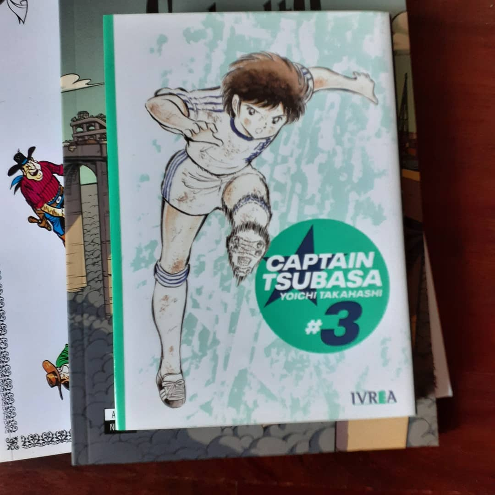
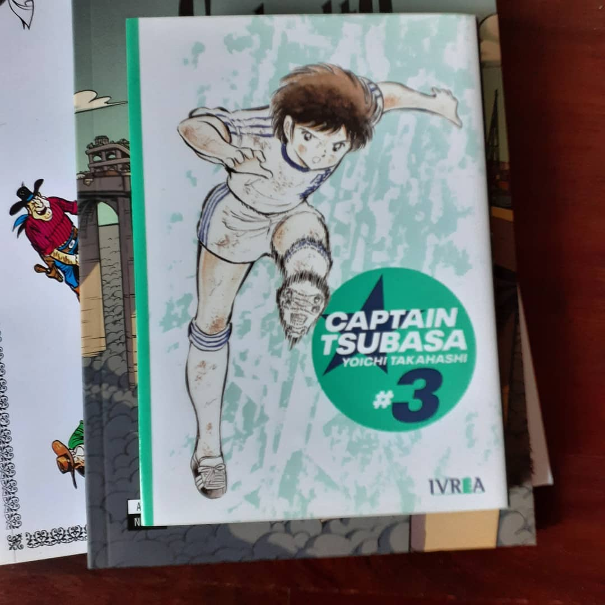

Como hice ayer, hoy les muestro otras de las compras y lecturas que tuve en este último tiempo. Esta vez, les muestro dos clásicos mundiales y una obra de gran calibre de autores nacionales. Algunas cosas que puedo decir sobre estas obras son: ‚Ä¢Captain Tsubasa (este es el volumen 3) sigue siendo una serie que te atrapa y te deja con ganas de más. La adrenalina que transmite cada partido en papel es única. Un manga más que recomendable que ha hecho historia y, tambi√©n, ha influido en la cultura futbol√≠stica de su pa√≠s. ‚Ä¢Lucky Luke es un personaje creado por el dibujante Morris (Maurice de B√©v√®vere) y que además fue trabajado por varios guionistas, entre ellos Ren√© Goscinny (Ast√©rix). Es uno de los personajes más reconocidos de la historieta Franco-belga y hace las veces en tono de parodia de un vaquero. Este tomo es el primero de la colecci√≥n realizada por del Zorzal y Planeta, y publicada originalmente en 1968 con los autores antes nombrados. Es un c√≥mic muy ameno y divertido aunque ya tenga sus a√±os y sufra un poco por eso. ‚Ä¢Por último, quer√≠a destacar una lectura reciente de una historieta argentina la cual es üîûCieloalto de Agrimbau y Pietro. Una excelente historia de ciencia ficci√≥n donde los personajes habitan en una ciudad ubicada en un puente donde según el lado al que vayan su edad crece o disminuye. El tratamiento de los conceptos y personajes es impecable e incluso da para una charla extendida de las cuestiones que toca. Ultra recomendado. Voy a seguir trayendoles lo que compro y leo en este formato con un mini comentario as√≠ tal vez les pica la curiosidad lectora. Posiblemente (si siento que puedo explayarme más) traiga una rese√±a o peque√±o art√≠culo sobre algún c√≥mic en cuesti√≥n. ¬øUstedes estuvieron leyendo? ¬øQu√© leyeron? ¬øLo recomiendan?